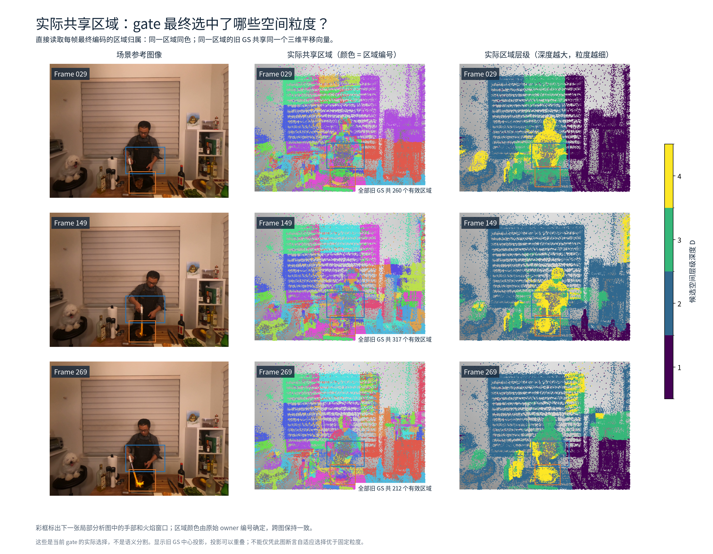
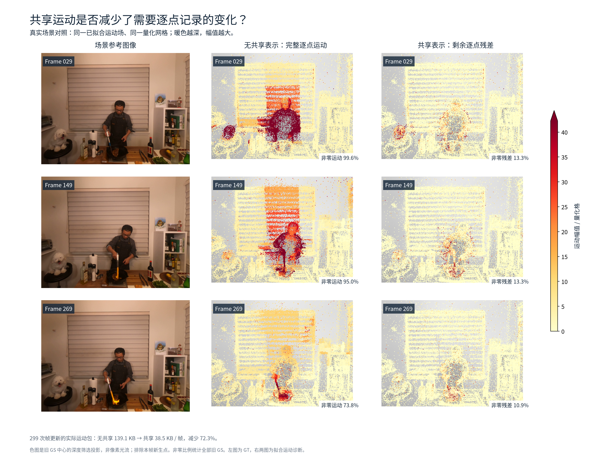
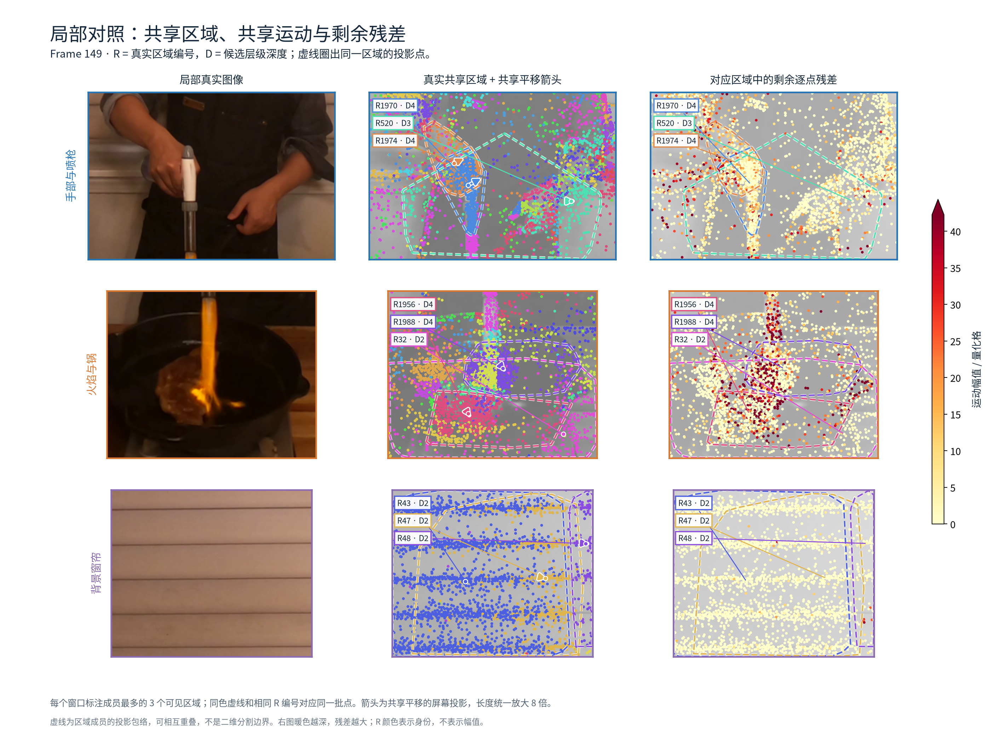
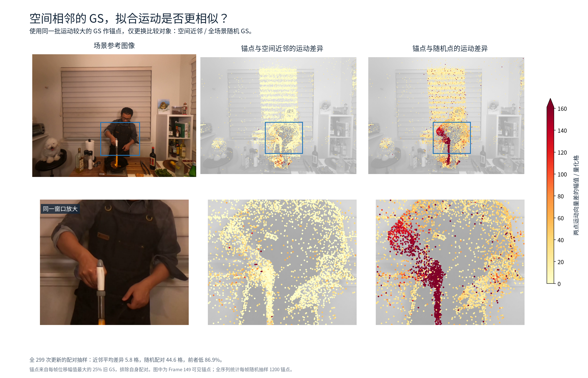
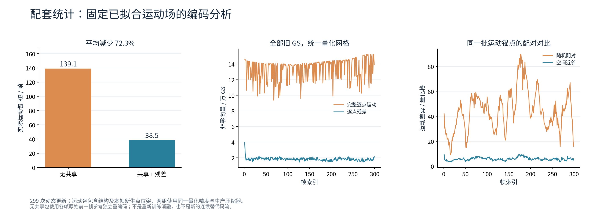

Flame Steak · cov150 完整 300 帧结果 · 首帧之后 299 次更新
汇报时可说：在这组拟合结果中，空间近邻的运动更相似；共享表示将逐点运动转为更稀疏、更小的残差；在相同量化运动场下，实际运动包从 139.12 降至 38.52 KB/帧，减少 72.3%。
直接从最终码流解码得到每个旧 GS 的 owner 编号。同编号同色；这些点共享同一个三维平移向量。第三列是相应候选区域的实际层级深度，深度越大、空间粒度越细。彩框连接后面的手部和火焰放大图。颜色是区域身份，并非语义类别。

三帧真实场景与对应 GS 中心投影。中列为完整逐点运动，右列为扣除区域共享运动后的残差。三行共用色标，深色代表更大的量化运动幅值。对比的是同一已拟合运动场的两种表示。

固定 Frame 149 的三个窗口。中列同色点属于实际相同的共享区域，标出 R 编号、D 深度和共享平移箭头；右列用相同颜色的虚线和编号对应这些区域，再查看区域内剩余残差。每个窗口标注成员最多的三个可见区域。虚线是区域成员的投影包络，不是二维语义分割边界；投影可重叠。共享平移箭头为真实成员的三维共享位移投影，长度统一放大 8 倍。

同一批位移幅值位于前 25% 的 GS 作锚点；中、右两列分别显示与三维空间最近邻、随机非自身 GS 的运动向量差。不是凭箭头示意，而是从实际码流中的完整运动向量计算。这里只验证当前模型中存在局部运动相关性，不等于独立真实运动的验证。

299 次动态更新的成对统计。运动包字节数是生产压缩器输出的实际文件长度，包含结构与本帧新点位姿，未将独立压缩的子流大小相加。KB=1000 字节。

这些是冻结已拟合场的场景诊断与编码消融，没有重新训练“关闭共享”或“固定粒度”的模型，因此不能据此单独声称 learnable gate 优于固定划分，也不能宣称超过其他方法的 SOTA。
点图在当前帧相机中投影旧 GS 中心，透明度阈值 0.03，每 2×2 像素格保留最近的合格中心。它不是 alpha 合成渲染、不是像素光流。局部窗口是图像窗口，可能包含不同深度的三维点；本帧新生点未进入旧点运动分析。
无共享编码将区域运动置零，将同一整数总运动放入逐点流，保留出生/删除与位姿负载，并使用相同压缩器。299 帧的整数运动均严格一致；浮点加法次序的最大差异为 0.009791 个量化格。因此这里只声称量化运动场一致，不声称替代连续流的像素逐位一致。
当前完整动态更新为 48.96 KB/帧；前面的 38.52 KB 仅指运动包。共享首帧单独保存，未摊入此动态均值。
299 帧统计 CSV · 样本帧的实际区域与共享位移 · 汇总与数据哈希
数据源：/home/gamer-02/Documents/DeepLearning/my4dgs/output/flame_steak_1028/fs_cov150_300/20261028T133500_9a96a2